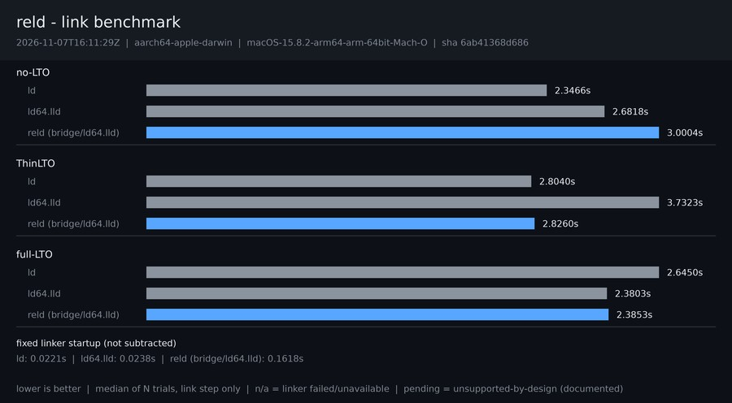

2026-11-07T16:11:29Z · aarch64-apple-darwin · macOS-15.8.2-arm64-arm-64bit-Mach-O

| Configuration | ld | ld64.lld | reld (bridge/ld64.lld) |
|---|---|---|---|
| no-LTO | 2.3466s | 2.6818s | 3.0004s |
| ThinLTO | 2.8040s | 3.7323s | 2.8260s |
| full-LTO | 2.6450s | 2.3803s | 2.3853s |
Reported raw and never subtracted from final-link medians.
| Series | Seconds |
|---|---|
| ld | 0.0221s |
| ld64.lld | 0.0238s |
| reld (bridge/ld64.lld) | 0.1618s |